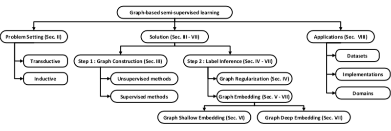

Key concepts: graph neural networks, machine learning, graph-based semi-supervised learning, graph representation learning.
Semi-supervised learning is used in problems in which we have both labeled and unlabeled data, by inferring the lacking labels. More specificallly, Graph-based Semi-supervised Learning (GSSL for short) methods start with constricting a graph where the nodes represent all the samples and the weighted edges reflect the similarity between the pair of nodes (the challenge is to make relationship between original samples well represented). The label inference is performed so that the label information.
The paper proposes taxonomy for graph-based semi-supervised learging with a generalized framework. This is shown in the gigure below:
 Framework for GSSL problem solving proposed by the authors.The paper brings a comprehensive set of definitions for graph-related concepts necessary for the study of GSSL.
The paper details techniques for costruction of the initial graph that represents the network to be studied. We have unsupervised and supervised methods. The supervised method calculates similarity between the nodes of the graph to infer the unlabeled nodes (KNN and b-matching approaches). Supervised methods are listed regarding recent researches.
For the classic GSSL methods, after the construction of the graph is necessary to perform its regularization, by calculating a function that is as close to the labels as possible and is smooth on the entire graph. This function is called Loss Function.
\[\mathcal{L}(f) = \sum_{{x}_{i},{y}_{i} \in \mathcal{D}_{l}} {\mathcal{L}_{s}(f({x}_{i},{y}_{i})) + \mu} + \sum_{{x}_{i} \in \mathcal{D}_{l}} {\mathcal{L}_{r}(f({x}_{i}))} \tag{1}\]
In the equation above (1) the first sum terms is the supervised loss component and the second one is the regularization loss component. There are multiple alternatives to the regulaization calculation and they differ in the particular choice of the loss function with various regularizers. the table bellow summarizes the Graph Regularization Methods:
\begin{array} {|r|r|} \hline \text{Method} & \text{Supervised loss } f_{s}(f, \mathcal{D}_{l}) & \text{Graph regularization loss } f_{r}(\mathcal{D}) \\ \hline \text{Gaussian Random Fields} & \sum_{i=1}^{n_{l}}(f(x_{i}) - y_{i})^{2} & \sum_{i, j}W_{i,j}(f(x_{i}) - y_{i})^{2} \\ \hline \text{Local and Global Consistency} & \sum_{i=1}^{n_{l}}(f(x_{i}) - y_{i})^{2} & (\sum_{i, j}W_{i,j}(f(x_{i})/\sqrt{D_{i,j}} - f(x_{j})/\sqrt{D_{i,j}})^{2}) \\ \hline \text{p-Laplacian} & \sum_{i=1}^{n_{l}}(f(x_{i}) - y_{i})^{2} & \sum_{i, j}W_{i,j}\left|f(x_{i})/\sqrt{D_{i,j}} - f(x_{j})/\sqrt{D_{i,j}}\right|^{p} \\ \hline \text{Directed regularization} & \sum_{i=1}^{n_{l}}(f(x_{i}) - y_{i})^{2} & (\sum_{i, j}\pi(i)p(i,j)(f(x_{i})/\sqrt{D_{i,j}} - f(x_{j})/\sqrt{D_{i,j}})^{2}) \\ \hline \text{Manifold regularization} & \sum_{i=1}^{n_{l}}(f(x_{i}) - y_{i})^{2} & \gamma_{A}\|f\|_{K}^{2} + \gamma_{I} \frac{1}{(n_{l} + n_{u})^2} \hat{y}^{T} L\hat{y} \\ \hline \text{Deformed Graph Laplacian (LPDGL)} & \sum_{i=1}^{n_{l}}(f(x_{i}) - y_{i})^{2} & (\sum_{i, j}W_{i,j}(f(x_{i}) - y_{i})^{2}) + (\sum_{i=1}^{n}(1 - \frac{D_{i,j}}{\sum_{i=1}^{n}D_{i,j}}(f(x_{i}))^2) \\ \hline \text{Poisson learning} & \sum_{i=1}^{n_{l}}(f(x_{i}) - y_{i})^{2} & (\sum_{i, j}W_{i,j}(f(x_{i}) - \sum_{j \in \mathcal{N}} f(x_{i}))^2) \\ \hline \end{array}
to be continued
Link to the original article here.